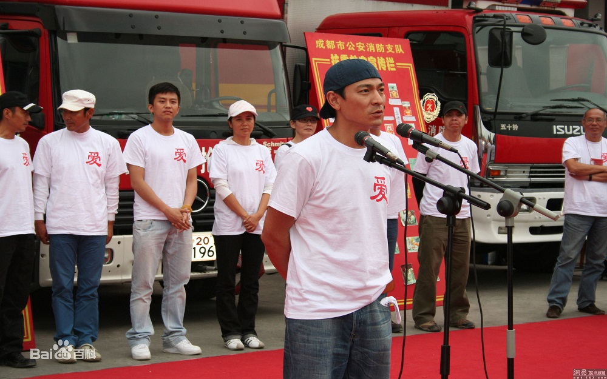
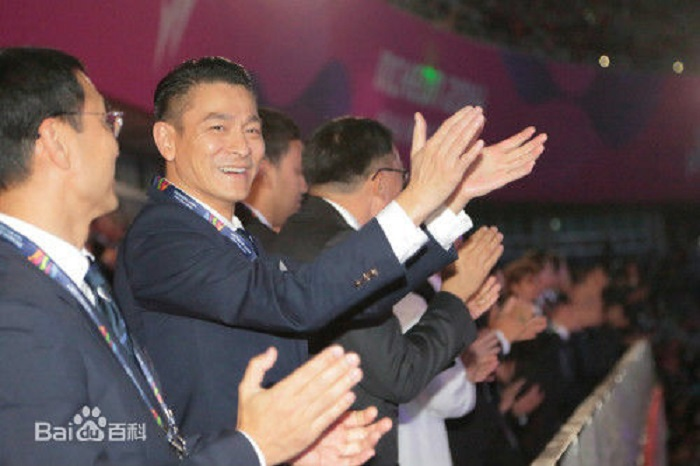
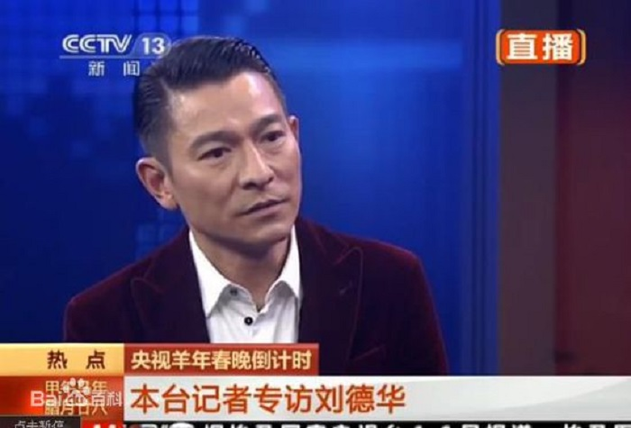

慈善活动
刘德华慈善基金会1994年正式成立，乃政府认可之慈善机构[58] ，从来没有公开募款，所以刘德华基金会并没有跟着刘德华的影响力而被大众知道，累计行善数百起，随着汶川地震的行善，这一基金会才被人渐渐知道。
1991年，华东水灾，刘德华捐款500万。1999年9月24日，刘德华、梅艳芳、张学友前晚出席中视《伸出你的手，九二一震灾捐款》，合唱《月亮代表我的心》一曲筹3000万善款。
2001年，上海演唱会上就将150万元演出收入作为慈善捐款捐献给艺术节组委会。2001年，内蒙古自治区遭受百年一遇的雪灾刘德华筹得首批捐助，约合40万元的2000件天蚕衣。
2004年，印度洋海啸刘德华捐款30万。2004年，为仁济医院筹款刘德华筹得480万。
2005年，爱心无国界，刘德华捐款1200万。2006年6月6日，刘德华捐款10万出席全港学童护眼大行动。2006年，投资2500万筹建“亚洲新星导”计划，扶持新导演，推动亚洲电影。
2008年5月13日，在汶川地震发生的第二天，刘德华在不知道地震程度多严重的情况下的第一时间向灾区捐款10万元，随后召集两岸三地明星艺人，发起抗震救灾关爱行动，并且亲自填词《承诺》作为赈灾歌曲，筹款近3900万港币。作为发起人的刘德华激动不已，下跪感谢每一位有爱心的艺人朋友。
2008年6月3日，在海南三亚进行的“爱心呵护阳光行动”中，刘德华拿出自己在香港传递奥运圣火时的奥运火炬进行现场义拍，拍得人民币190万元，拍卖所得将全部用于四川地震灾区教育事业。他除了把自己的火炬捐出进行拍卖之外，还同时以75万元买下了美女主播赵宇瑛捐卖的火炬。
2009年台湾八八水灾，刘德华与众艺人共同发起募款赈灾晚会。2010年4月，刘德华与成龙领衔《抗旱救灾-我们在行动》赈灾晚会，筹募2.8亿元，刘德华个人捐款20万元。2010年4月23日刘德华当选中国残疾人福利基金会理事及副理事长。2010年4月玉树地震，刘德华发布短文，并与演艺明星领衔《情系玉树-关爱行动》赈灾义演，赈灾现场为灾区筹得捐款3506万港元。
2011年4月1日晚，刘德华参加由香港演艺人协会召集的《爱心无国界311烛光晚会》筹款活动。2011年6月14日，刘德华再次被推选为中国残疾人福利基金会第三届理事会副理事长。
奥运活动
2007年，在北京奥运会倒计时一周年时，刘德华推出了自己为北京残奥会写作的歌曲《EveryoneIsNO.1》，并自费港币150万，赴北京取景拍摄了整整三天的经典MTV。刘德华希望藉由这首歌和MTV能激励更多伤残人士勇敢的再站起来。
2008年，刘德华成为奥运会圣火在香港传递的第四棒火炬手，也是首棒艺人火炬手；2008年8月8日，在散场期间刘德华，周华健，容祖儿等同组献唱奥运歌曲《为生命喝彩》；2008年9月6日，在2008年夏季残疾人奥林匹克运动会开幕式开始前的文艺表演中，刘德华于鸟巢现场同残疾演员同台表演了《EveryoneIsNo.1》，在胡锦涛宣布北京残奥会开幕后，刘德华与韩红合唱北京残奥会主题歌《和梦一起飞》。
2014年10月18日，刘德华以香港残疾人奥委会副主席身分出席仁川举行的2014亚洲残疾人运动会开幕礼，为选手打气。他以平常心勉励香港队选手：“在我心中Everyone is number one。”
2014年10月18-22日，刘德华访问韩国仁川，出席亚残运会开幕式，并为轮椅击剑、田径、轮椅舞蹈等三项比赛获奖运动员颁奖。
2001年，世界杰出华人基金会“中华文化大使”
2002年，四川省慈善大使、都江堰旅游形象大使
22004年，香港惩教署更生大使
2005年，中国电影百年形象大使
2006年，中国肝炎防治基金会乙肝防治宣传大使、第13届“国际电影节荣誉大使、香港救治老年人、儿童护眼光明大使
2007年，大连海洋公园保育基金会“保育大使、LGShine宣传大使、世界杰出华人基金会中华文化大使
2008年，中国残疾人联合会爱心大使、北京残奥会爱心大使
2010年，爱心呵护，阳光行动——爱心大使、2010年上海世博会亲善大使
2011年，2011香港精神”宣传大使
2012年，伦敦残奥会中国代表团爱心大使
2013年，见地未来奥迪英杰汇品牌形象大使
春节晚会
1992年，刘德华与张雨生通过提前录制演唱视频，和毛阿敏合唱《心中常驻芳华》，与春晚首次结缘。
1995年，刘德华首次登上央视春晚舞台，演唱歌曲《忘情水》。
1998年，刘德华与张信哲、毛宁合唱《大中国》。
2005年，刘德华扮财神为春晚开场，并演唱歌曲《恭喜发财》。
2015年，刘德华再登央视春晚，独唱羊年春晚主题曲《回家的路》。
Follow Us
Email Updates
Join our digital mailing list and get news
deals and be first to know about events